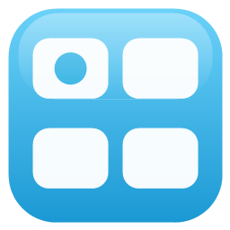
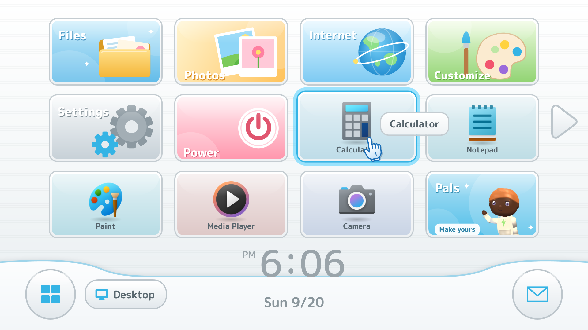
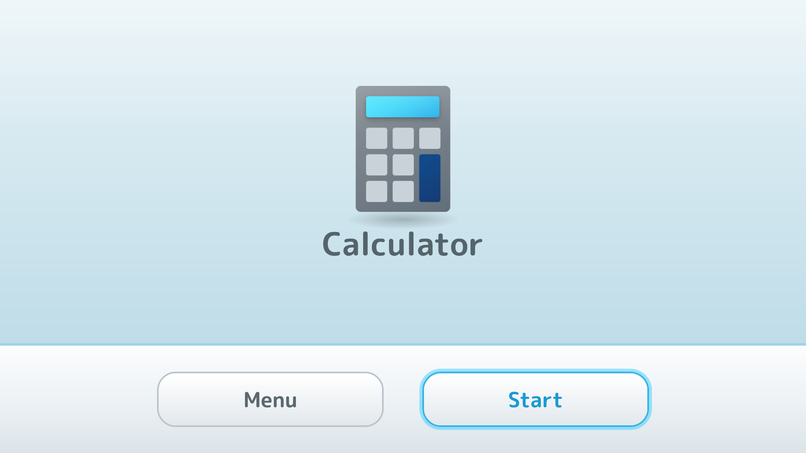
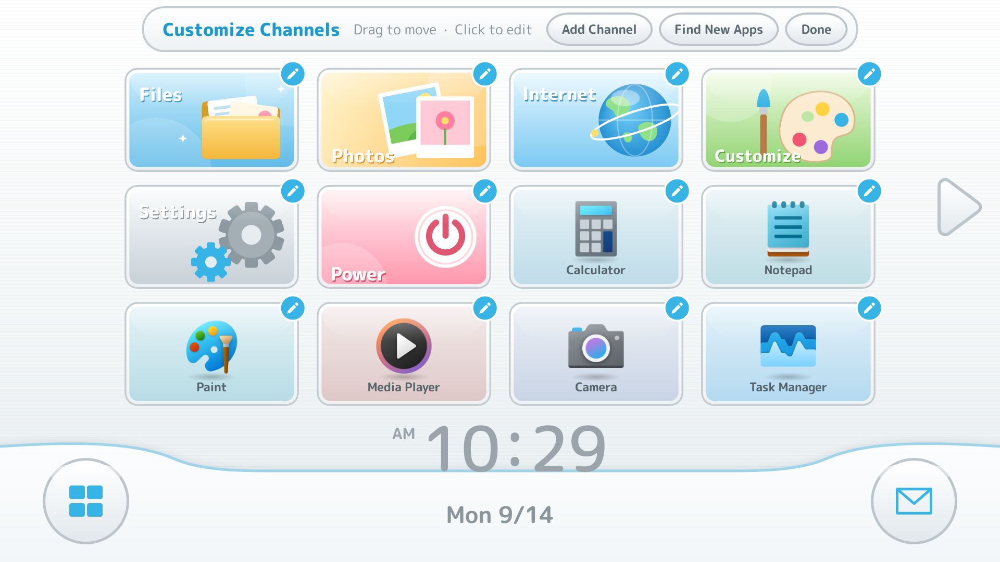
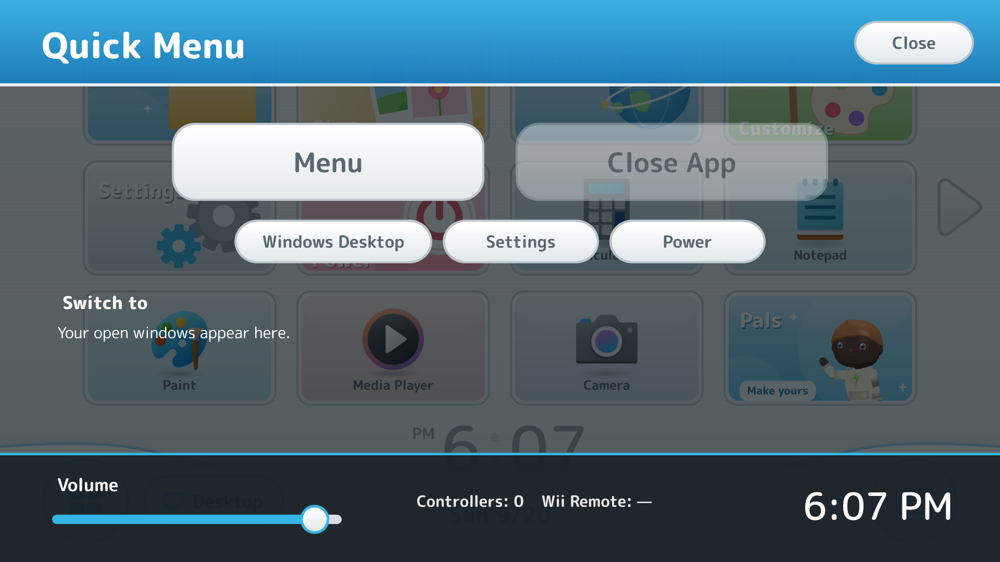
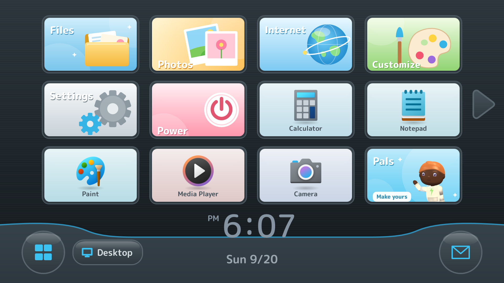
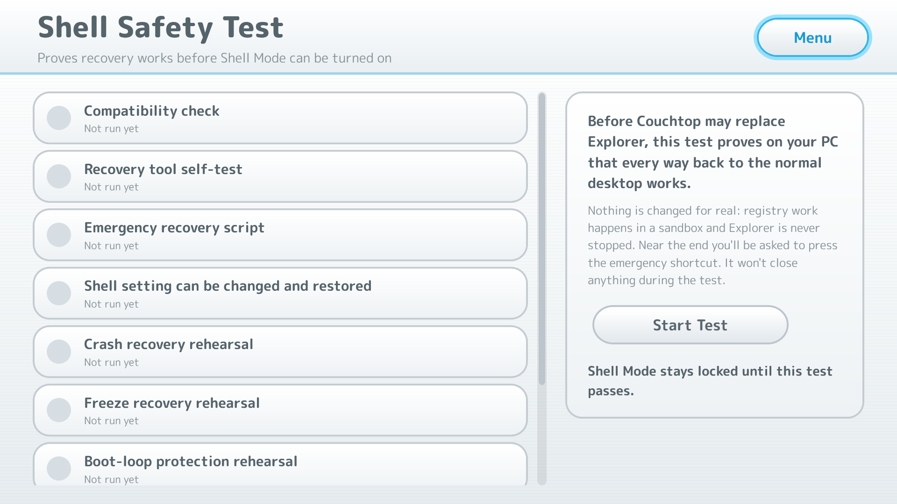

Couchtop
Turn your Windows PC into a couch console.
v0.6.2 · very early betaWindows 10 1809+ or Windows 11. Install per user with no admin needed, or grab the portable zip and run it from any folder. The beta isn't code-signed yet, so SmartScreen may ask you to click More info → Run anyway.
Screenshots





